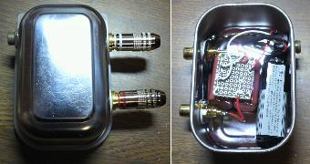
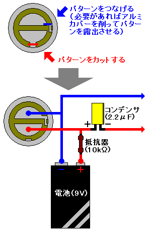
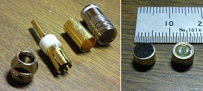

マイクの自作
2011年06月10日 カテゴリー：実験等

自作マイクについて紹介します。実はかなり前に作っていました。ソロギター動画の左端にちょこっと映っていたやつです
（ステレオにしてますがパソコン側がステレオ録音に対応してなかったのでモノラルで使用）。
もちろん今回はコンデンサーの自作の時のように材料からというわけではありません。Panasonic WM-61Aというコンデンサマイクを使用しました（秋月電子で2個200円）。Siegfried Linkwitz氏考案のカプセルの改造がよく行われているらしく、通称パナ改とかWM-61A改とか呼ばれているみたいです。
改造は下図のように行いました。結構細かい作業です。コンデンサはなんとなくデカい10μFのフィルムコンデンサを使いました。正直理論的なことは全然理解してませんので自信ありません。とりあえず動作は問題ないようです。

そして下写真のように頑張ってプラグに取り付けます。使わないときはプラグを外しておかないと電池を消耗しますので、電源スイッチをつけてもよかったかもしれません。
